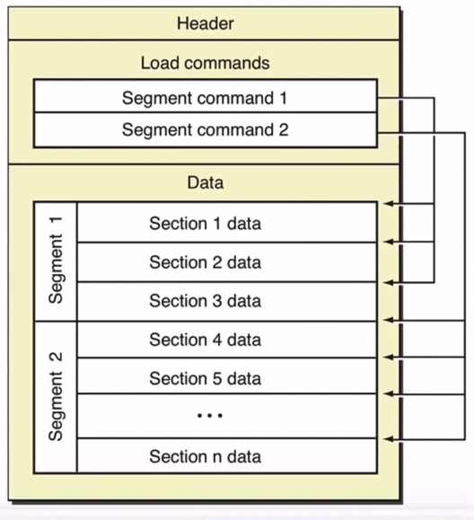
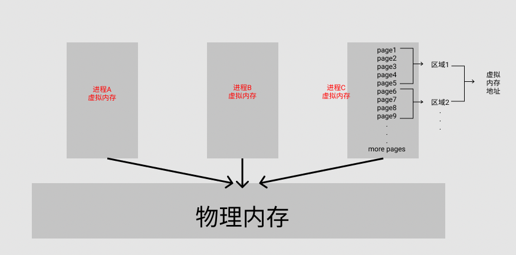
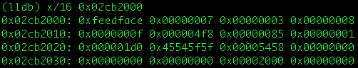

1. 原理
当执行文件由操作系统运行时，就成为一个进程。
实际上可执行文件和处理同一个对象的不同状态，即一些数据和一组指令。我们可以将可执行文件视为静态，将进程视为动态。可执行文件在硬盘上，而进程“存储”在内存中。所以，进程包含数据和指令它们在内存中。
- 优点： 能够及时反馈修改情况
- 缺点： 不能保存修改信息，应用重新加载后修改消失

2. 虚拟内存、内存页和内存区域
当操作系统执行一个可执行文件时，它会将这个可执行文件从硬盘加载到内存中。
这个进程在内存中的哪个位置？
每个进程都有自己独立的内存空间（即进程A与B运行在不同的内存区域），这是通过内存虚拟化来实现的。大部分操作系统都是基于虚拟内存，对于像ARMv7这样的32位处理器，每个进程的虚拟内存大小是2^32=4G字节大。但是大多数进程不需要4GB来运行，它们只消耗4GB的一小部分。一个进程实际使用的内存大小称为进程的虚拟地址空间，4GB虚拟空间被划分为很多很多的内存页进行分配，而内存页是“一个固定长度（iOS/OSX上为4096字节）的连续虚拟内存块，，它是内存操作的最小数据单位”。进程的虚拟内存地址空间由多个内存区域组成。每个内存区域包含多个虚拟内存页，注意内存区域可能不连续。

建模
无论代码编写成什么样子，最终都会被翻译成0和1。在虚拟内存地址中定位目标值，就像在段落中搜索字符串模式一样简单。
在我们的示例中，内存中有一个匹配模式，从第 11 个数字“0”开始，到第 16 个数字“1”结束。
在实际情况下，将二进制视为十六进制更容易。所以一段内存应该是这样的：

Oxfeedface可以看作是一个Mach-O文件开始的标记
请注意，像“0xfeedface”这样的每个块占用 4 个字节（因为 0xfe = 11111110 = 8 位 = 1 个字节），所以它就像：
1 | Address : Byte |
如果我们的目标值是 int targetValue = 21592 == 0x5458，我们可以在地址 0x02cb2009 到 0x02cb200c 的内存段中找到它，对吗？但是，由于指令和其他数据也存储在内存中，因此 0x5458 可能只是指令的一部分，或者是长数的一部分（比如 0x0000545845545f5f。ARM 是小端），它可能不会呈现我们的 int 目标值。这种情况发生在我们的大多数内存搜索中，即可以找到多个匹配项。如果是这种情况，我们必须再次搜索更具体的值（我们稍后将在示例中对此进行研究）。现在我们知道“内存搜索”是什么意思了
了解了这些信息，尝试将内存编辑器建模：
功能如下：
- 通过枚举所有虚拟内存区域，获取目标进程的虚拟内存地址空间；（这里要解决非越狱下不注入的情况下如何获取其他进程）
- 在地址空间中搜索我们需要的目标值，并且获得可能的目标值；
- 修改目标值；
具体实现：
内存相关处理的函数 mach_vm 文档 $参数$
1 | kern_return_t |
描述：从一个地址空间读取/复制一个范围并将其返回给调用者。$map$是要读取其内存的任务的端口；$addr$是开始读取的地址；$size$是要读取的字节数；$data$是用于存储读取字节的缓冲区；$data_size$在输入时，是指向缓冲区最大大小的指针；在输出上，指向读取的大小。
1 | kern_return_t |
描述：将数据写入目标任务地址空间中的指定地址。$map$是要写入其内存的任务的端口；$address$是开始写入的地址；$data$是要写入的缓冲区；$size$是 的大小$data$。
1 | kern_return_t |
描述：返回虚拟内存区域的描述。$map$是地址空间包含区域的任务的端口；$addr$在输入时，是开始寻找区域的地址；输出时，返回实际使用的起始地址；$size$输出是定位区域中的字节数；$flavor$是要返回的信息类型，应该是VM_REGION_BASIC_INFO；$info$返回区域信息，vm_region_basic_info_data_64_t在 32 位和 64 位操作系统上都应该是类型；$count$在输入时，应该是VM_REGION_BASIC_INFO_COUNT_64；在输出时，区域的大小。
1 | void * |
描述：定位字节串$little$中第一次出现的字节串$big$。如果匹配，$little$则返回指向第一次出现的第一个字符的指针；否则它返回NULL。
测试
终端编译代码：
gcc main.m -o hello -ObjC -framework Foundation